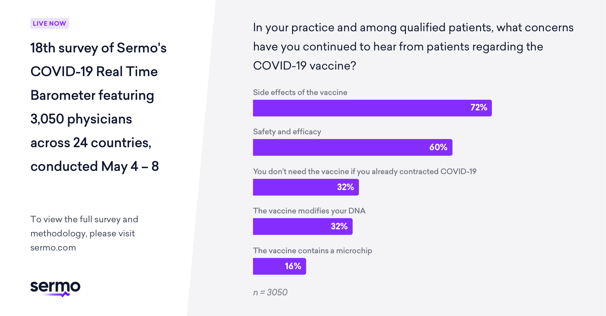

Side Effects
The Covid-19 vaccine can cause some side effects ranging from common ones to very rare ones.
The most common side effects which 1 in 10 people experience are:
- tenderness or swelling in your arm where you had the vaccine injection
- feeling tired
- headache
- muscle pain
- joint pain
- diarrhoea
- fever (temperature of 38 degrees Celsius or above)
The slightly rarer side effects which 1 in 100 people experience are:
- nausea
- vomiting
- redness in your arm where you had the injection
Some of the rarest side which 1 in 1,000 people experience effects are:
- itchiness where the vaccine was given
- itchiness in general
- a rash
- swelling of the lymph glands
- sleeplessness
The rarest and most severe side effects are:
- a severe alergic reaction which can affect 1 in 100,000
- There have also been extremely rare cases of blood clots documented

 Covid-19 Vaccine Info
Covid-19 Vaccine Info